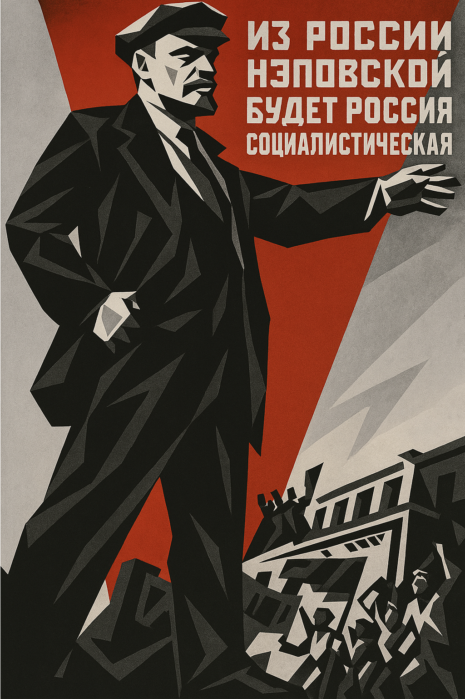
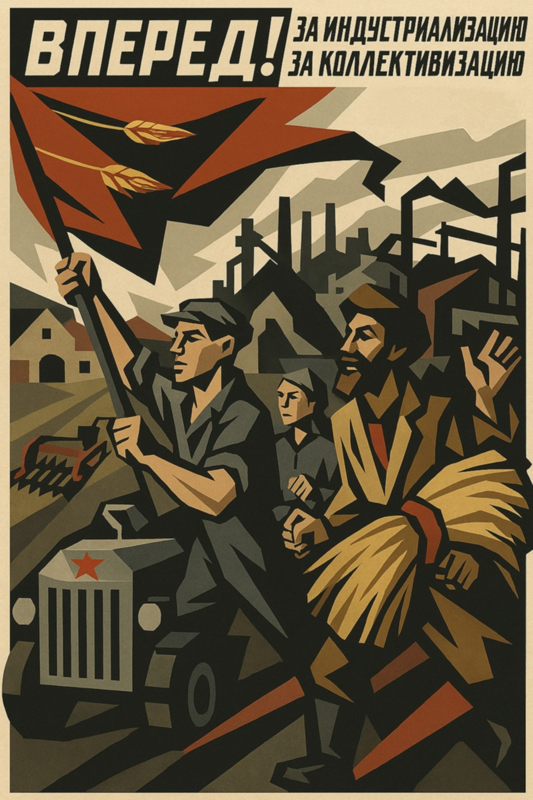
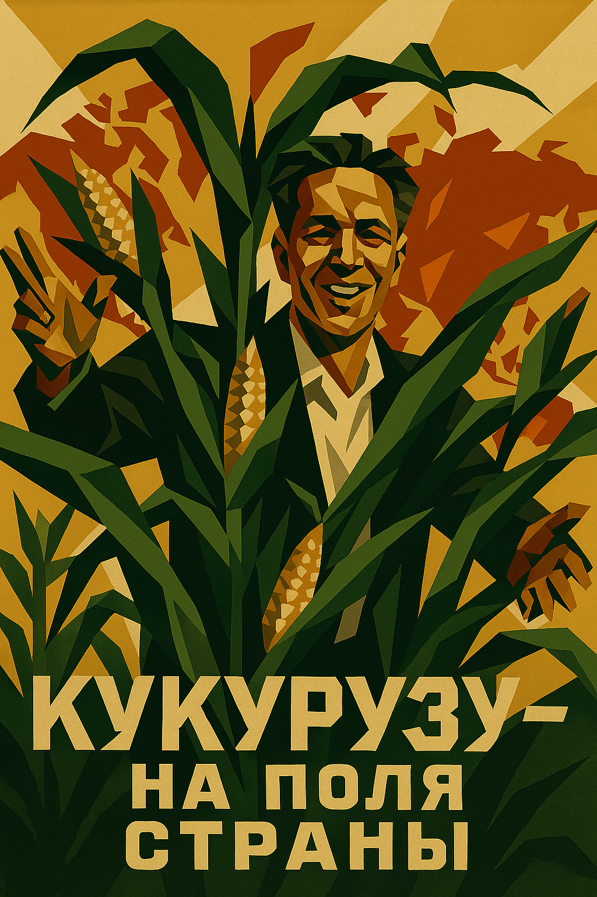
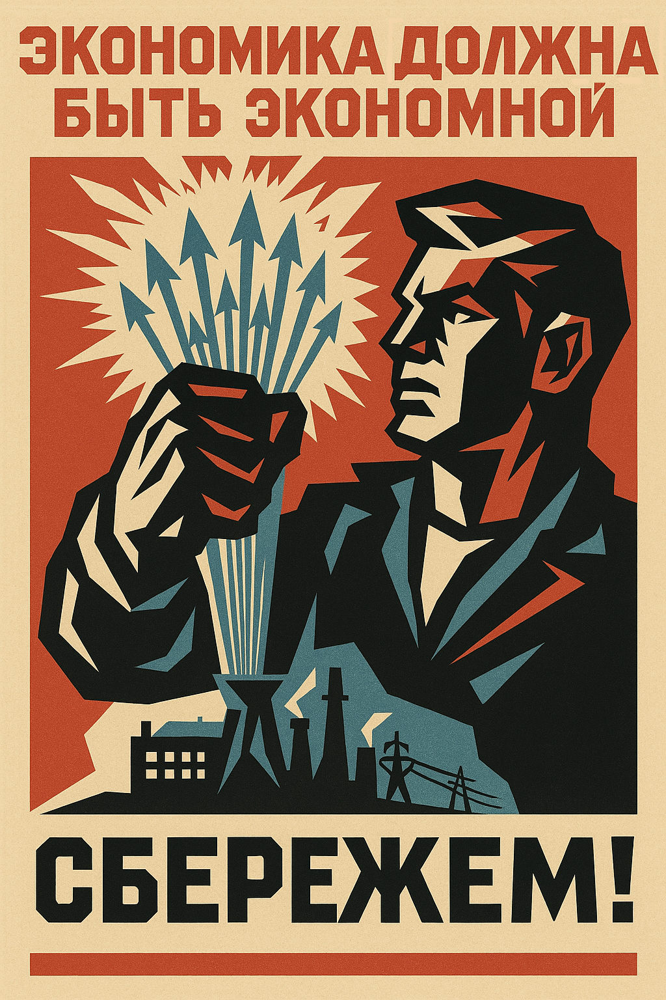
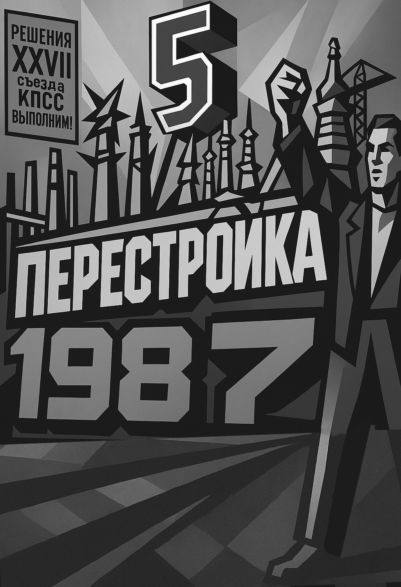
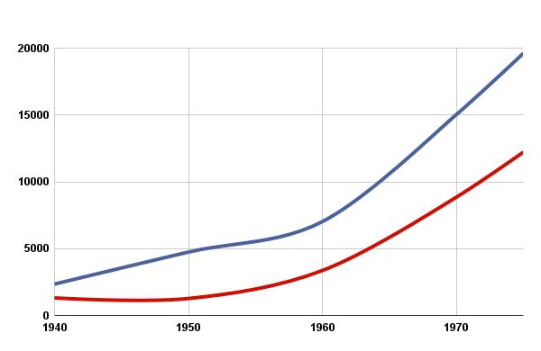
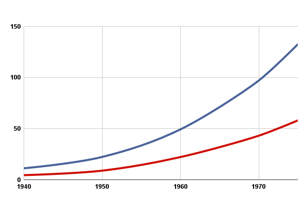
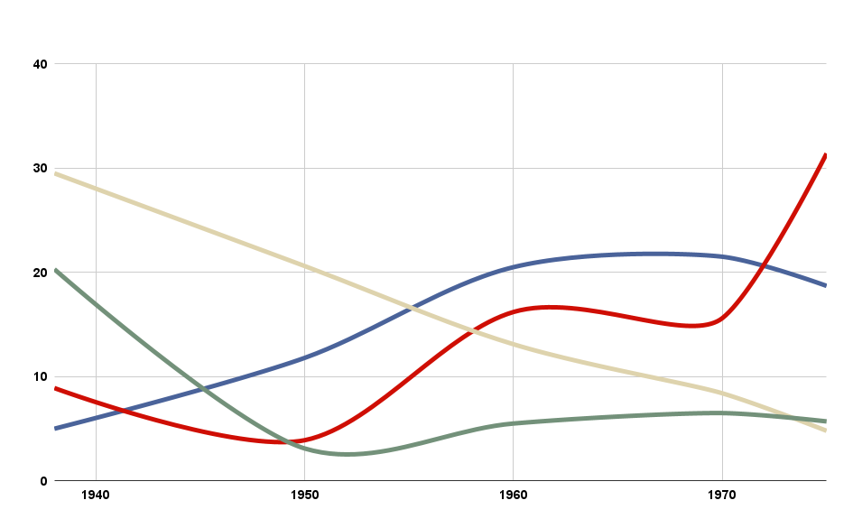
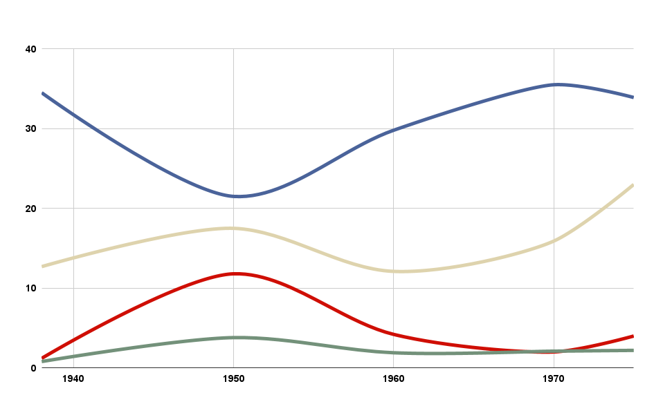

30.1
53.4
16.5
62.7
23
14.3
1932 г.
1940 г.






Общественное питание, млн. руб.

Товарооборот
Продукция собственного производства
Розничный товарооборот, млрд. руб.

Государственная торговля
Потребительская кооперация
Доля форм торговли, %
30.1
53.4
16.5
62.7
23
14.3
1932 г.
1940 г.
Государственная торговля
Кооперативная торговля
Колхозный рынок
Товарная структура экспорта, %

Машины и оборудование
Топливо и электроэнергия
Лесоматериалы и целлюлозно-бумажные изделия
Продовольственные товары и сырьё для их производства
Товарная структура импорта, %

Машины и оборудование
Топливо и электроэнергия
Лесоматериалы и целлюлозно-бумажные изделия
Продовольственные товары и сырьё для их производства